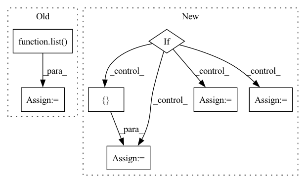

Pattern ID :36515
Before Change
rows_to_calc_neighbors_for = \
np.argwhere([x in indices_to_calc_neighbors_for for x in data.index]).flatten()
else:
rows_to_calc_neighbors_for = list( range(num_samples))
num_indices_to_calc = len(rows_to_calc_neighbors_for)
distances, indexes = np.zeros((num_indices_to_calc, num_neighbors)), np.zeros((num_indices_to_calc, num_neighbors))After Change
representing the indexes of the nearest neighbors.
num_samples = data.shape[0]
if samples_to_calc_neighbors_for is not None:
data = pd.concat([ data, samples_to_calc_neighbors_for = samples_to_calc_neighbors_for.shape[0]
else:
num_indices_to_calc = data.shape[0]
cat_data = data[cat_cols]
numeric_data = data[numeric_cols]In pattern: SUPERPATTERN
Frequency: 4
Non-data size: 7
Instances Fragment ID: 103634730
Project Name: deepchecks/deepchecks
Commit Name: e9b85cbcf3518ab440a10f9198953b75108a97fb
Time: 2022-08-31
Author: 92314933+nirhutnik@users.noreply.github.com
File Name: deepchecks/utils/gower_distance.py
M Class Name: AnonimousClass
N Class Name: AnonimousClass
M Method Name: calculate_nearest_neighbors_distances(5)
N Method Name: calculate_nearest_neighbors_distances(5)
M Parent Class:
N Parent Class:
M File Name: deepchecks/utils/gower_distance.py
N File Name: deepchecks/utils/gower_distance.py
M Start Line: 59
M End Line: 117
N Start Line: 59
N End Line: 130
Before Change
df_list = create_df_list(df)
if local_modeling:
df_train_list = list()
df_val_list = list()
for df in df_list:
df_train, df_val = _split_df(df, n_lags, n_forecasts, valid_p, inputs_overbleed)
df_train_list.append(df_train)
df_val_list.append(df_val)After Change
df_train (pd.DataFrame,dict):training data
df_val (pd.DataFrame,dict): validation data
if isinstance(df, pd.DataFrame):
df_is_dict = False
df_dict = { "__df__": df}
elif isinstance(df, dict):
df_is_dict = True
df_dict = df
else:
raise ValueError("Please insert valid df type (i.e. pd.DataFrame, dict)")
df_train = {} Fragment ID: 103634796
Project Name: ourownstory/neural_prophet
Commit Name: 6619741f934957dff2a7fa4ff66620772d41471f
Time: 2022-02-14
Author: ourownstory@users.noreply.github.com
File Name: neuralprophet/df_utils.py
M Class Name: AnonimousClass
N Class Name: AnonimousClass
M Method Name: split_df(6)
N Method Name: split_df(6)
M Parent Class:
N Parent Class:
M File Name: neuralprophet/df_utils.py
N File Name: neuralprophet/df_utils.py
M Start Line: 532
M End Line: 548
N Start Line: 573
N End Line: 598
Before Change
compressed_st = {"state_dict": {}}
layers = list( st["state_dict"].keys())
print("getting compression")
for name in layers:
// print(each)After Change
def compress(delta_ckpt, ckpt, diffuser=False, compression_ratio=0.6, device="cuda"):
st = torch.load(f"{delta_ckpt}")
if not diffuser:
compressed_key = "state_dict"
compressed_st = {compressed_key: {}}
pretrained_st = torch.load(ckpt)["state_dict"]
if "embed" in st["state_dict"]:
compressed_st["state_dict"]["embed"] = st["state_dict"]["embed"]
del st["state_dict"]["embed"]
st = st["state_dict"]
else:
from diffusers import StableDiffusionPipeline
compressed_key = "unet"
compressed_st = { compressed_key: {}}
pretrained_st = StableDiffusionPipeline.from_pretrained(ckpt, torch_dtype=torch.float16).to("cuda")
pretrained_st = pretrained_st.unet.state_dict()
if "modifier_token" in st:
compressed_st["modifier_token"] = st["modifier_token"] Fragment ID: 103634721
Project Name: adobe-research/custom-diffusion
Commit Name: 5cd1e9c869b793d88573533a6a2adccd10aadcd0
Time: 2023-01-05
Author: nupurkumari@Nupurs-MacBook-Pro.local
File Name: src/compress.py
M Class Name: AnonimousClass
N Class Name: AnonimousClass
M Method Name: compress(5)
N Method Name: compress(4)
M Parent Class:
N Parent Class:
M File Name: src/compress.py
N File Name: src/compress.py
M Start Line: 10
M End Line: 48
N Start Line: 8
N End Line: 48
Before Change
ids1 = [labels2[i].id for i in inds1]
inds2 = ious.argmax(axis=0)
max2 = list( ious[inds2, range(labels2)])
ids2 = [labels1[i].id for i in inds2]
return max1, max2, ids1, ids2
After Change
max1 = [None] * m
ids1 = [None] * m
if labels1:
inds2 = ious.argmax(axis=0)
max2 = list(ious[inds2, range(n)])
ids2 = [labels1[i].id for i in inds2]
else:
max2 = [None] * n
ids2 = [ None Fragment ID: 103634737
Project Name: voxel51/fiftyone
Commit Name: a928cee5d666d054f409449cfbde86043eb3cbb5
Time: 2022-04-25
Author: brimoor@umich.edu
File Name: fiftyone/utils/iou.py
M Class Name: AnonimousClass
N Class Name: AnonimousClass
M Method Name: _extract_max_ious(3)
N Method Name: _extract_max_ious(3)
M Parent Class:
N Parent Class:
M File Name: fiftyone/utils/iou.py
N File Name: fiftyone/utils/iou.py
M Start Line: 337
M End Line: 343
N Start Line: 333
N End Line: 354